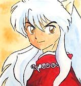
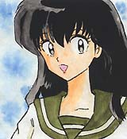
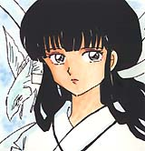
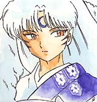
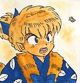
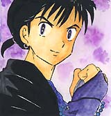
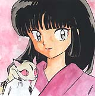
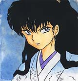

|  | Inu-Yasha is the protagonist of our story. He is the son of a demon and a human, and the brother of Sessho-maru. Fifty years ago, Inu-Yasha was pinned to a tree and placed into a state of suspended animation by Kikyo, a priestess he loved deeply. Decades later, Inu-Yasha was freed by Kagome, a reincarnated version of his former (and now deceased love) Kikyo. Harboring a deep feeling of betrayal from what had happened he unwillingly aided Kagome in her search for the Shikon Jewel shards. During their quest Inu-Yasha has discovered that Kikyo has been brought back to live, and the reason she attacked him... it was all set-up by the evil demon Naraku who sought the power of the Shikon Jewel. Now Inu-Yasha must make ammends with Kikyo, who blames him for her death and sort out his feelings for Kagome. Also of interest, because of Inu-Yasha's mixed parentage, one night each month, he becomes a normal human. |
|  | Kagome Higurashi led a normal life until she fell into the Bone Eater's Well and was transported to the Sengoku Era of Japan (1467 to about 1600). After she arrived she was attacked by a demon called Mistress Centipede and while she was running away, she accidently freed the yokai named Inu-Yasha, who had been under a spell for 50 years. Soon after meeting, the village that Kagome landed in learns that she holds the Shikon Jewel in her body. The jewel is soon extracted and split into dozens of small shards. Inu-Yasha wants to reunite all the parts so that he can become a full-blooded demon. Kagome goes along with him in order to help keep the shards out of the hands of other more corrupt demons. Kagome and Inu-Yasha's relationship gets off to a very rough start. Kagome reminds Inu-Yasha of Kikyo, the woman that cast the spell on him, and with whom he was in love. Later, much to Kagome's surprise, everyone learns that she is in fact the reincarnation of Kikyo. Throughout their adventures, the two become closer, but once Kikyo is resurrected by Urasue, their relationship gets put on hold while Inu-Yasha tries to sort out his feelings for Kikyo. Kagome's bravery and her (sometimes) excellent marksmanship with her bow and arrow are a constant asset to the group of adventurers in their quest to reunite all the shards of the Shikon Jewel |
|  | Kikyo was a priestess charged with guarding the Shikon Jewel from falling into the wrong hands. Demons from across Japan traveled to Kikyo's small village in an attempt to steal the jewel from her and gain incredible powers. One of those demons was Inu-Yasha, who repeatedly attempted to steal the jewel. Neither he, nor Kikyo ever attempted to harm one another in the process, and eventually they began to grow close Kikyo believed that they were both similar because they had to mask their humanity. She felt that she could not be a normal human because if she was, she would be slaughtered by demons. Inu-Yasha refused to acknowledge his human side, and was trying to become a full-blooded demon with the aid of the Shikon Jewel. Because of their similar situations they began to grow very close. Kikyo realized that if Inu-Yasha would use the jewel to become human rather than a demon, the could both lead normal lifes. The jewel would become pure and vanish, thus freeing Kikyo of her obligations as the Shikon's protector. On one fateful day, Inu-Yasha appeared before Kikyo and brutally attacked her and took the Shikon Jewel. Betrayed and confused, Kikyo used the last of her powers to put Inu-Yasha in a sleep-like state for over fifty years. After completing this, she died. Fifty years later, Kikyo was revived by the Ogress Urasue. Upon meeting Inu-Yasha again, he began to realize that their stories did not match-up, and that he never attacked her. It is later revealed that Naraku disguised himself as Inu-Yasha in order to steal the jewel. Unable to believe this, Kikyo still seeks to kill her former lover, Inu-Yasha. |
|  | Sessho-maru is the half-brother of Inu-Yasha. They can best be described as "estranged", to put it lightly. Sessho-maru dislikes humans, and knowing that his brother is half human seems to be one of the main reasons Sessho-maru dislikes him. Sessho-maru is often seen in the company of his loyal servant Jaken and a large Oni that he is usually riding on. Upon hearing that his half-brother had been freed from the spell he immediately began searching for him in order to learn of the location of their father's legendary sword, Tetsusaiga. After a long skirmish, Sessho-maru found out, much to his disappointment that he is unable to weild the Tetsusaiga because of his demon blood. On the other hand, because Inu-Yasha is half human, he can use the powerful sword. After a long battle, Inu-Yasha was able to drive off Sessho-maru and cut off one of his arms in the process. Sessho-maru arrived on the scene again later, and with the help of Naraku was able to temporarily use a human's arm in place of his old one to use the Tetsusaiga. He has recently gained a new travelling companion, a young girl named Rin whom he seems to be taking care of. He has also gained the Tetsusaiga's companion blade- the Tenseiga. |
|  | Kagome and Inu-Yasha first meet Shippo on a battle field, where he has disguised himself as a spirit, in order to scare the two into giving up their Shikon shards. The reason Shippo needs the jewel is so that he can avenge the death of his father at the hands of Hiten and Manten, the Thunder Brothers. Shippo is a demon known as a kitsune, or fox demon. He has the the power of illusion, which he uses to decieve and confuse. Shippo's powers also include the ablility to change shape. He has used this power to become everything from a bow to a skull and in dire situations, he can use his fox fire to keep his enemies at bay. Even though he comes across as a bit of a brat, Shippo is really a very kind person, especially when it comes to Kagome. He feels very protective of her because of all she did to help him after his father died. Shippo doesn't exactly feel the same towards Inu-Yasha, as the two are constantly arguing or putting down one another. Shippo gets nervous from time to time, but when the chips are down, he can be really brave, and has risked his life on several occasions for his companions. |
|  | Miroku is a lustful monk and is quite skilled in combat. Miroku has been known to do some less than holy acts in order to get ahead, and most of his good deeds are preformed for the sake of women or money. Miroku's grandfather was cursed by Naraku. The story goes that Naraku had transformed himself into a courtesan, and just like Miroku, his grandfather was quite fond of the fairer sex. Naraku pierced his grandfather's hand and that is what brought about the curse. The hole is passed down though each generation, and it widens each year. It continues to do so until it has devoured it's victim. The only way to break the curse is to kill Naraku. Miroku is also the one that tells Inu-Yasha about Naraku killing a priestess fifty years ago. After hearing this, Inu-Yasha is able to piece together what happened to cause Kikyo to seal him away. Over the course of the story, Miroku and Inu-Yasha have begun to get along better, the void in Miroku's hand has proven to be a great asset, and his spiritual powers and quite helpful as well. Also of note, Miroku is sometimes seen running scams with a large Tanuki, the Tanuki turns itself into a scary looking demon and Miroku "exorcises" him. They then split the profits from the excorcism. |
|  | We first see Sango the youkai exterminator fighting a giant centipede with her huge boomerang, Hiraikotsu. After killing the centipede she takes a Shikon shard from it and states that the Shikon Jewel was created in her town. Sango's town is later shown and we are introduced to her father, her pet named Kirara, and her little brother Kohaku. Sango is collecting the Shikon pieces in hopes of finding someone that will be able to purify them. One night Sango, her father, and Kohaku are called to a castle to exterminate a large spider demon, during the fight, it appears that the demon has been killed, but a small spider jumps on Kohaku. Kohaku kills his father and attempts to kill Sango, but not before the lord of the castle has them both killed. A young man there on business realizes that the lord was possessed and kills him, but it appears to be too late for Sango and Kohaku, so they are buried in the garden. Sango (and unknown to her Kohaku) manages to survive. Naraku arrives shortly there after and convinces Sango that Inu-Yasha has destroyed her town in his quest for the Shikon Jewel. After learning the truth, Sango decides to travel with the group in order to avenge her fellow townsfolk. Kohaku now travels with Naraku under his possession. |
|  | Naraku is one of the most powerful demons in the series, and is the the puppeteer pulling the strings behind the scenes. At first he tracks Inu-Yasha and his companions from a distance, but after being detected by Kagome, he is forced to face his foes for the first time. At first Naraku appears to be cowardly by letting others do his dirty work for him. He states that this is because he is between transformations, and he would be unable to defeat Inu-Yasha in this state. His history with Inu-Yasha stretches back over fifty years, to shortly before Kikyo's death. At one time Kikyo took care of a badly burned criminal named Onigumo. Onigumo had a twisted love for her, but the feeling was not mutual. As Kikyo's love for Inu-Yasha grew, her powers began to weaken, until demons were able to close in on Onigumo. Drawn there by his evil thoughts, the demons recieved Onigumo's sould in a bargin for great power. Before dying he asked that the demons "give him the strength to steal the Shikon Jewel and make Kikyo mine...!" The demons did this by eating Onigumo and becoming one, and thus Naraku was born. |